冬奥会开幕式短片Show Reel
二十四节气 倒计时
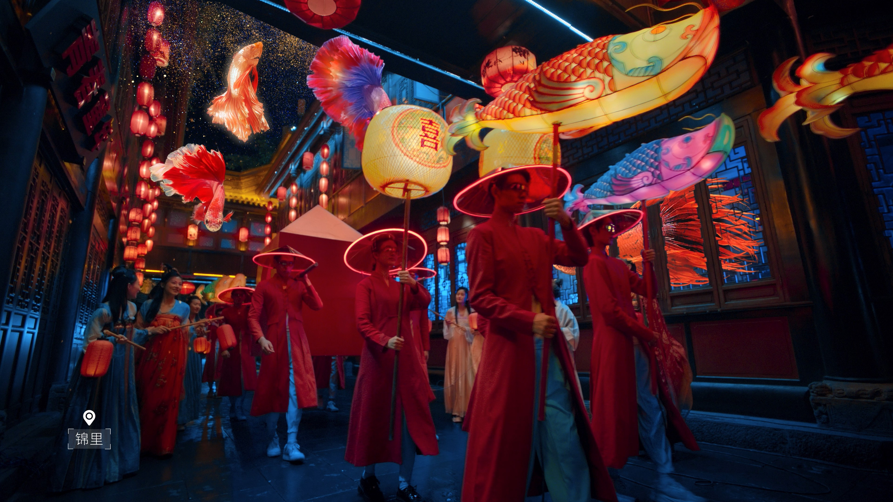
BY YOUR SIDE 白猿山 商业视觉服务商
FilmAIGCEnablement
Scroll
AI-Driven Commercial Visual Solutions
见过高山
亦接地气
对于白猿山来说，影视工业 + AI 驱动的真正价值，在于为客户降本增效的同时，依旧实现高标准的商业视觉。
白猿山是一家立足国家级影视工业、深入 AI 视觉内容前沿的创作公司。
What We Do [04]
四大业务 一体协同
从「外包式做内容」升级为「内部可持续生产内容」——这才是长期竞争力。
Our Team
核心团队

01
袁安洲
Director · 导演
冬奥创作团队成员影视概念设定AI 全流程
从业近二十年。冬奥会二十四节气宣传片团队成员，三生三世十里桃花等电影概念设定主笔及导演，曾服务各类海内外一线品牌。
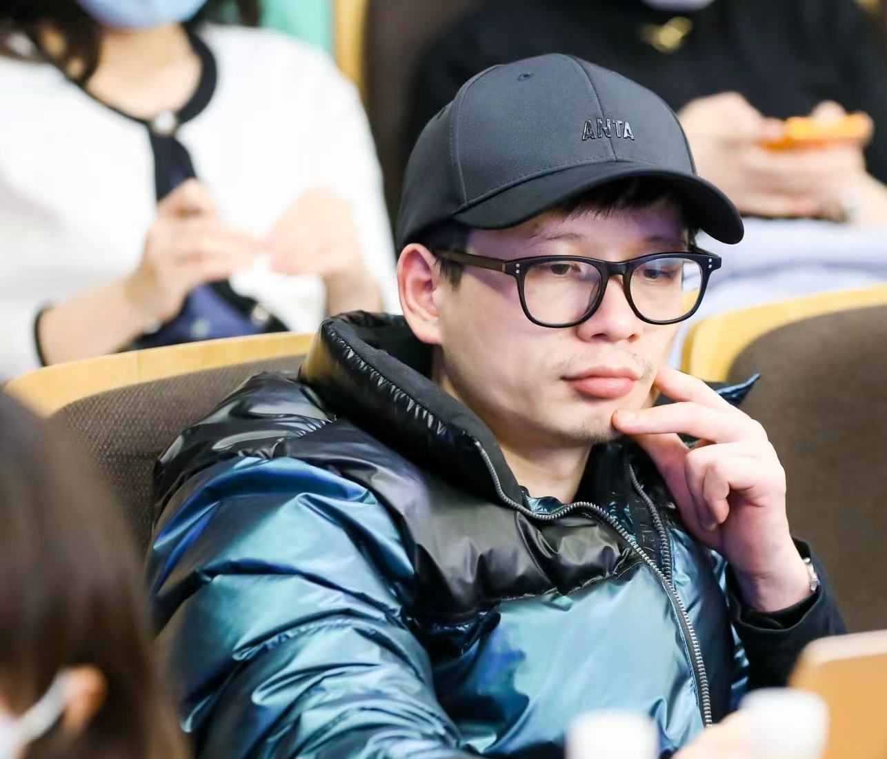
02
肖洒
Director & Editor · 导演 / 剪辑
冬奥开幕式主创CLIO 国际广告奖入围戛纳
入行逾十五年。北京冬奥会开幕式后期核心主创，CLIO 国际广告奖、长城奖与黄河奖金奖得主。与央视、中宣部深度合作，深得张艺谋等一线导演赞誉。
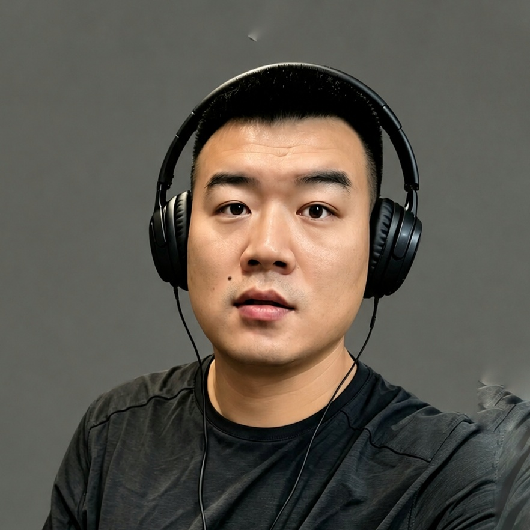
03
李杰
Business Director · 商务总监
电视台主持大厂运营政企整合
前电视台主持人，多年互联网大厂运营经验，央企核心项目负责人，是团队的商业引擎。
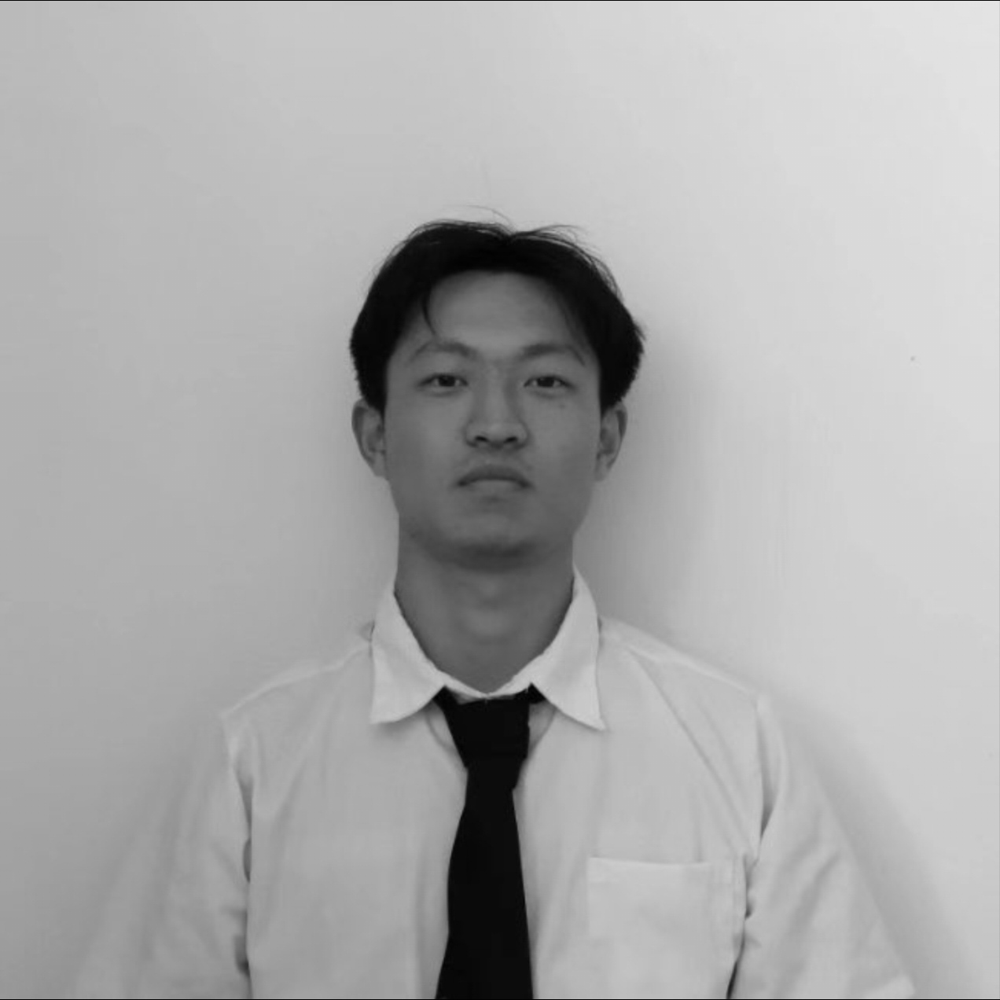
04
戴顾杰
Tech Director · 技术总监
RMIT 数字媒体AIGC 全流程AI 剧集
皇家墨尔本理工大学（RMIT）数字媒体专业，工程与艺术复合背景。数字作品曾于墨尔本 Black Box 展出，制作多部 AI 剧集上线红果等平台。
Track Record · 国家级重大项目 & 知名企业
我们曾参与服务过国家级重大项目及其他知名企业和单位，包含 「冬奥会」开幕式、中宣部、CCTV、腾讯、百度、中远物流、中国外代、泸州老窖、宝马、交通银行、自然雅舍 等；并服务过湖南本土知名企业 芒果TV、湖南卫视、麻辣王子、三湘银行 等。
Notable Names · 合作知名人士
黄渤李安马特·达蒙周迅许知远张震马岩松徐小平陈坤塞缪尔·杰克逊斯坦·李李健大张伟水木年华
National Projects & Brands [101]
国家级项目 · 知名品牌
* 以上为部分代表性项目与合作方，排名不分先后。
Notable Talent [10]
镜头之下 名家同框
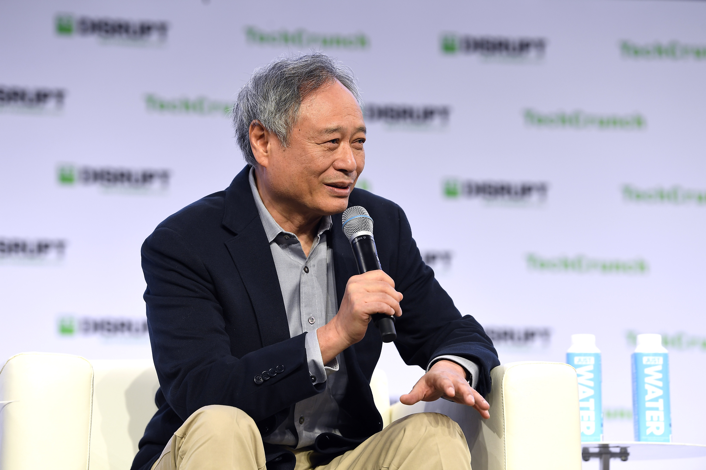
Intl Intl
Intl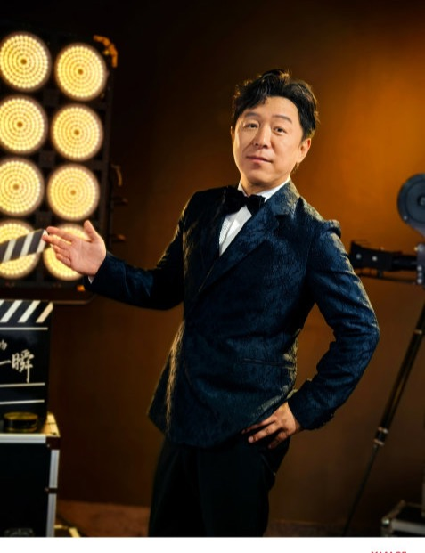
CN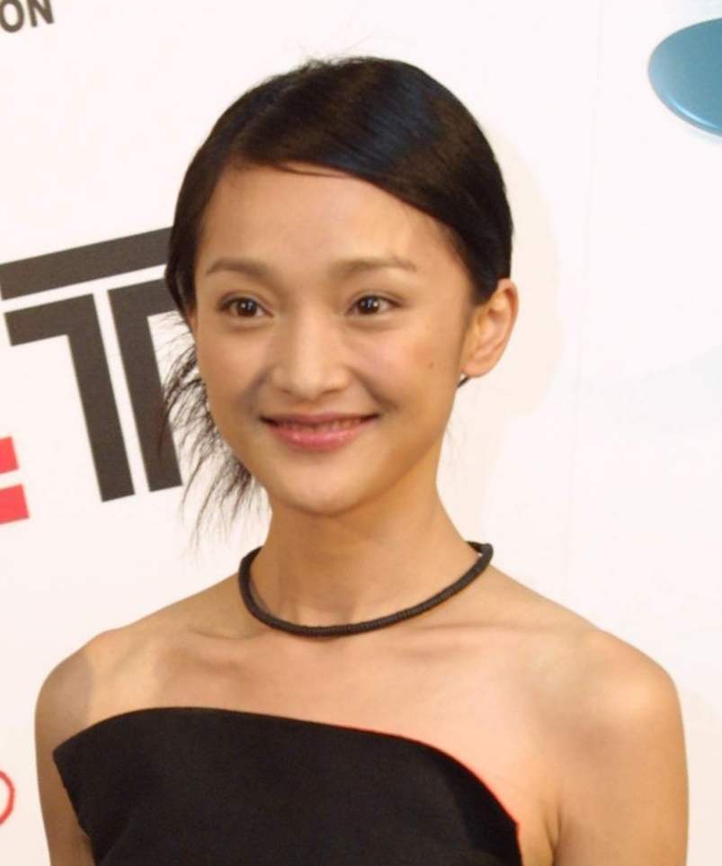
CN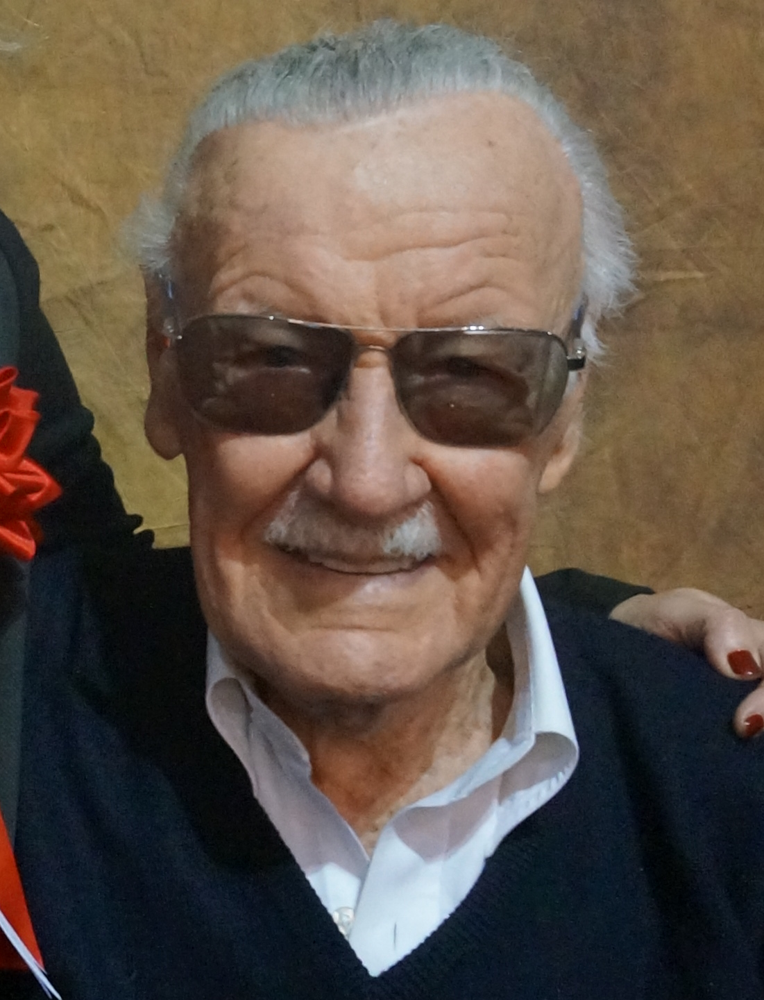
Intl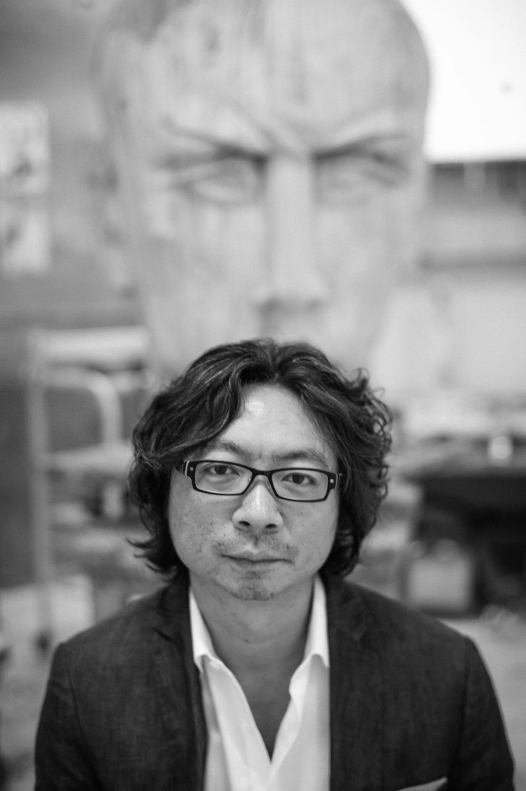
CN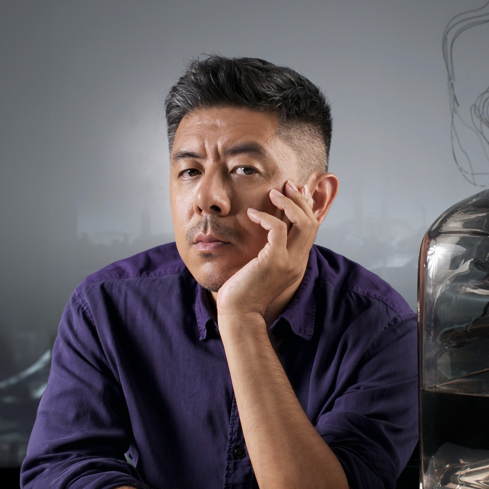
CN CN
CN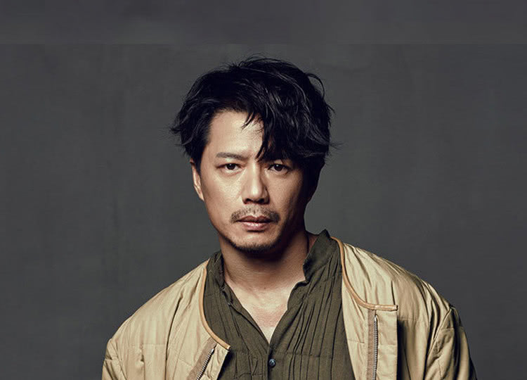
CNHonors & Recognition
荣誉 · 行业认可
01
International
戛纳金狮奖入围
Cannes Lions 2023 · Film Craft Shortlist · 问道成都 & 特能打

02
National
北京 2022 冬奥会证书
Beijing 2022 · 开幕式 · 二十四节气倒计时
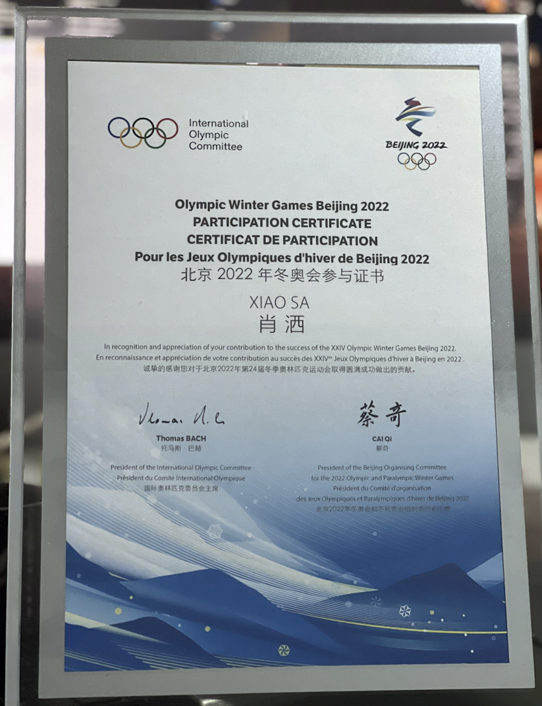
03
Awards
黄河奖金奖
Huanghe Awards · 品牌影像 / 公益广告

Selected Works [59]
项目精选
点按展开
01加快乡村振兴